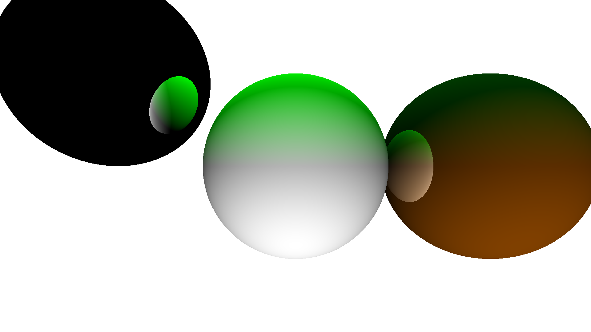
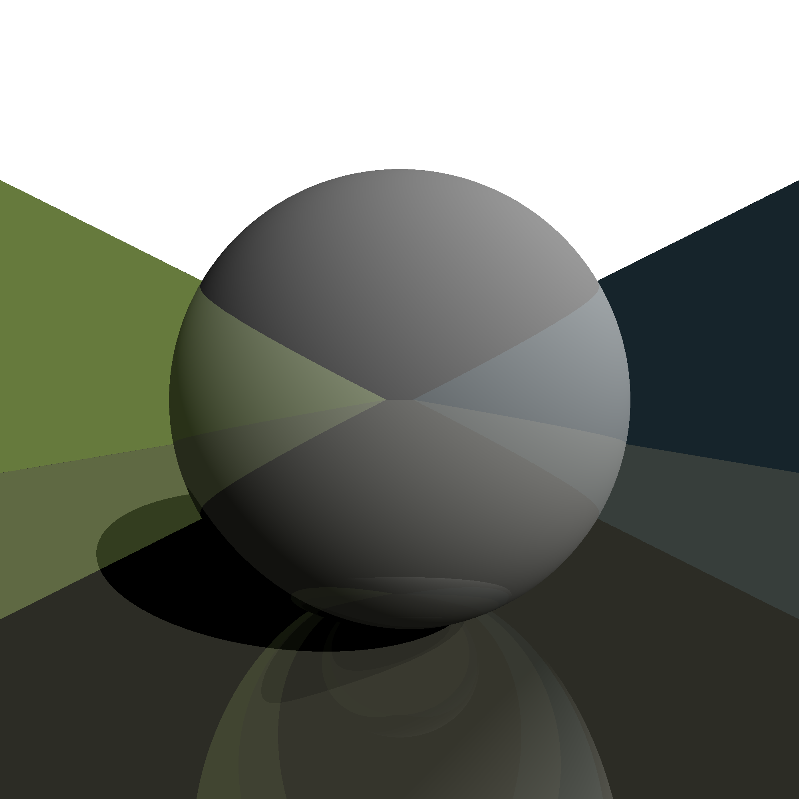
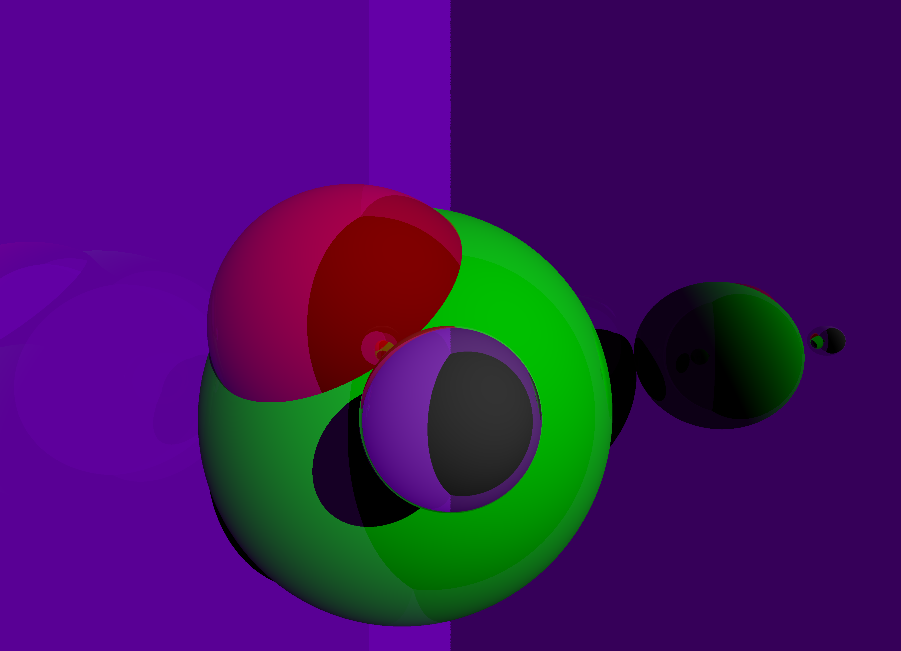
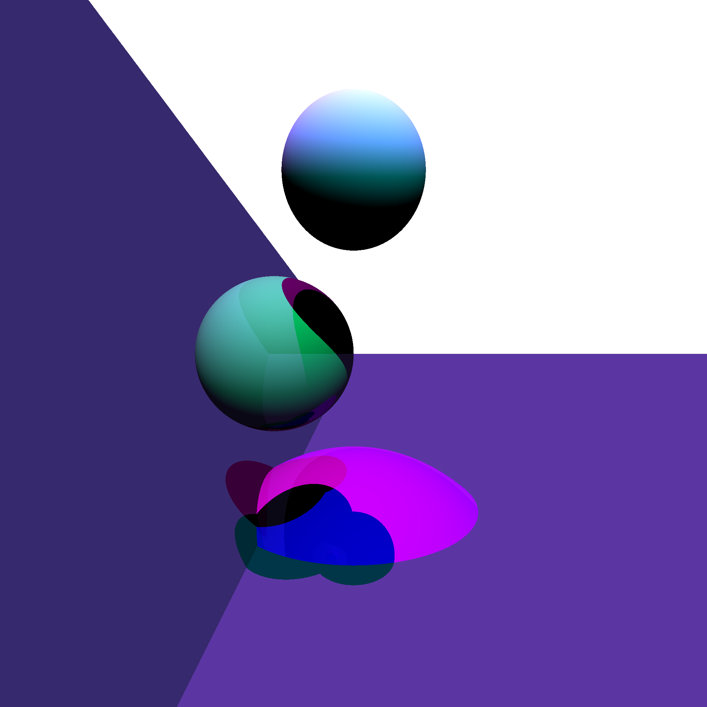

For my computer graphics class, we were
expected to produce a basic raycaster, which took SVG-like commands and rendered a scene.
It's not real-time, there is no hardware acceleration. Each of these images took 4-10 seconds to generate. The results are still pretty impressive
png 2000 2000 bounces.png bounces 12 color 2 2 2 sun 0 1 1.2 shininess 1 sphere -2 0 -1 2 shininess 0.6 color 0.3 0.5 0.4 sphere 0.8 0 -1 0.8 shininess 0 color 0.5 0.4 0.3 sphere 0 -0.2 -.3 .1
png 1920 1080 planets.png sphere 0 0 -1 0.3 color 1 0.5 0 shininess 0.5 sphere 0.6 0 -1 .3 color 0 1 1 shininess 1 sphere -0.6 .3 -1 .3 color 1 1 1 sun 0 -1 1 color 0 1 0 sun 0 1 0
png 2000 2000 soccer-hd.png shininess 0.5 color 0.6 0.6 0.5 plane 0 1 0 0.5 shininess 0 color 0.5 0.6 0.3 plane 1 2 0.1 4 color 0.3 0.5 0.6 plane -1 2 0.1 4 shininess 0.4 color 1 1 1 sphere 0 0 -1 0.5 sun 1 1 1
png 3600 2600 overlap.png bounces 7 color 1 0 0 shininess 0.5 sphere -0.2 0 -1 0.3 shininess 0.8 color 1 1 1 sphere 0 -0.1 -.5 0.1 shininess 0.25 color 0 1 0 sphere -.1 -.2 -1.2 0.5 color 0 0 1 sphere -.7 -.8 -3 0.3 shininess 0.2 color 0.6 0 1 plane 2 0 1 3 shininess 0.6 color 0 1 0 plane 1 0 -1 -3 color 1 1 1 sun 0.5 0.5 1
png 2000 2000 suns-hd.png color 1 0 1 sun 0 2 1 color 0 1 1 sun .2 1 1 color 0.4 0.3 0.4 plane 0 1 0 1 plane 0.8 0.6 0 1 color 1 1 1 sphere 0 .5 -1 0.2 shininess 0.2 color 0.5 1 0.5 sphere -.3 0 -1.4 0.3 color 1 0 1 sphere 0 -2 -2.5 1.3